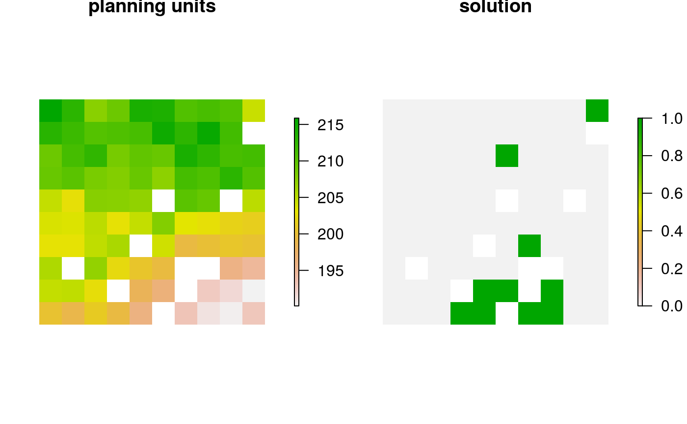
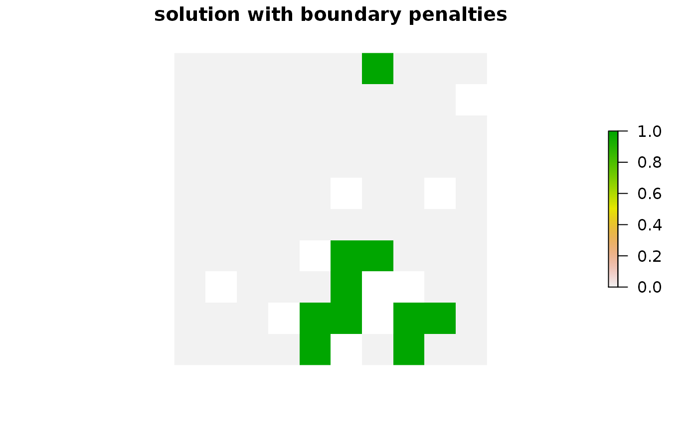

Specify that the Gurobi software
(Gurobi Optimization LLC 2021) should be used to solve a
conservation planning problem(). This function can also be used to
customize the behavior of the solver.
It requires the gurobi package to be installed
(see below for installation instructions).
add_gurobi_solver(
x,
gap = 0.1,
time_limit = .Machine$integer.max,
presolve = 2,
threads = 1,
first_feasible = FALSE,
numeric_focus = FALSE,
node_file_start = Inf,
start_solution = NULL,
verbose = TRUE
)problem() (i.e., ConservationProblem) object.
numeric gap to optimality. This gap is relative
and expresses the acceptable deviance from the optimal objective.
For example, a value of 0.01 will result in the solver stopping when
it has found a solution within 1% of optimality.
Additionally, a value of 0 will result in the solver stopping
when it has found an optimal solution.
The default value is 0.1 (i.e., 10% from optimality).
numeric time limit (seconds) for generating solutions.
The solver will return the current best solution when this time limit is
exceeded. The default value is the largest integer value
(i.e., .Machine$integer.max), effectively meaning that solver
will keep running until a solution within the optimality gap is found.
integer number indicating how intensively the
solver should try to simplify the problem before solving it. Available
options are: (-1) automatically determine the intensity of
pre-solving, (0) disable pre-solving, (1) conservative
level of pre-solving, and (2) very aggressive level of pre-solving .
The default value is 2.
integer number of threads to use for the
optimization algorithm. The default value is 1.
logical should the first feasible solution be
be returned? If first_feasible is set to TRUE, the solver
will return the first solution it encounters that meets all the
constraints, regardless of solution quality. Note that the first feasible
solution is not an arbitrary solution, rather it is derived from the
relaxed solution, and is therefore often reasonably close to optimality.
Defaults to FALSE.
logical should extra attention be paid
to verifying the accuracy of numerical calculations? This may be
useful when dealing problems that may suffer from numerical instability
issues. Beware that it will likely substantially increase run time
(sets the Gurobi NumericFocus parameter
to 3). Defaults to FALSE.
numeric threshold amount of memory (in GB).
Once the amount of memory (RAM) used to store information for solving
the optimization problem exceeds this parameter value, the solver
will begin storing this information on disk
(using the *Gurobi( NodeFileStart parameter).
This functionality is useful if the system has insufficient memory to
solve a given problem (e.g., solving the problem with default settings
yields the OUT OF MEMORY error message) and a system with more memory is
not readily available.
For example, a value of 4 indicates that the solver will start using
the disk after it uses more than 4 GB of memory to store information
on solving the problem.
Defaults to Inf such that the solver will not attempt
to store information on disk when solving a given problem.
NULL or object containing the starting solution
for the solver. Defaults to NULL such that no starting solution is used.
To specify a starting solution, the argument to start_solution should
be in the same format as the planning units (i.e., a NULL, numeric,
matrix, data.frame, Raster, Spatial,
or sf::sf() object).
See the Start solution format section for more information.
logical should information be printed while solving
optimization problems? Defaults to TRUE.
Object (i.e., ConservationProblem) with the solver
added to it.
Gurobi is a state-of-the-art commercial optimization software with an R package interface. It is by far the fastest of the solvers available for generating prioritizations, however, it is not freely available. That said, licenses are available to academics at no cost. The gurobi package is distributed with the Gurobi software suite. This solver uses the gurobi package to solve problems. For information on the performance of different solvers, please see Schuster et al. (2020) for benchmarks comparing the run time and solution quality of different solvers when applied to different sized datasets.
Please see the Gurobi Installation Guide vignette for details on installing the Gurobi software and the gurobi package. You can access this vignette online or using the following code:
vignette("gurobi_installation", package = "prioritizr")Broadly speaking, the argument to start_solution must be in the same
format as the planning unit data in the argument to x.
Further details on the correct format are listed separately
for each of the different planning unit data formats:
x has numeric planning unitsThe argument to start_solution must be a
numeric vector with each element corresponding to a different planning
unit. It should have the same number of planning units as those
in the argument to x. Additionally, any planning units missing
cost (NA) values should also have missing (NA) values in the
argument to start_solution.
x has matrix planning unitsThe argument to start_solution must be a
matrix vector with each row corresponding to a different planning
unit, and each column correspond to a different management zone.
It should have the same number of planning units and zones
as those in the argument to x. Additionally, any planning units
missing cost (NA) values for a particular zone should also have a
missing (NA) values in the argument to start_solution.
x has Raster planning unitsThe argument to start_solution
be a Raster object where different grid cells (pixels) correspond
to different planning units and layers correspond to
a different management zones. It should have the same dimensionality
(rows, columns, layers), resolution, extent, and coordinate reference
system as the planning units in the argument to x. Additionally,
any planning units missing cost (NA) values for a particular zone
should also have missing (NA) values in the argument to start_solution.
x has data.frame planning unitsThe argument to start_solution must
be a data.frame with each column corresponding to a different zone,
each row corresponding to a different planning unit, and cell values
corresponding to the solution value. This means that if a data.frame
object containing the solution also contains additional columns, then
these columns will need to be subsetted prior to using this function
(see below for example with sf::sf() data).
Additionally, any planning units missing cost
(NA) values for a particular zone should also have missing (NA)
values in the argument to start_solution.
x has Spatial planning unitsThe argument to start_solution
must be a Spatial object with each column corresponding to a
different zone, each row corresponding to a different planning unit, and
cell values corresponding to the solution value. This means that if the
Spatial object containing the solution also contains additional
columns, then these columns will need to be subsetted prior to using this
function (see below for example with sf::sf() data).
Additionally, the argument to start_solution must also have the same
coordinate reference system as the planning unit data.
Furthermore, any planning units missing cost
(NA) values for a particular zone should also have missing (NA)
values in the argument to start_solution.
x has sf::sf() planning unitsThe argument to start_solution must be
a sf::sf() object with each column corresponding to a different
zone, each row corresponding to a different planning unit, and cell values
corresponding to the solution value. This means that if the
sf::sf() object containing the solution also contains additional
columns, then these columns will need to be subsetted prior to using this
function (see below for example).
Additionally, the argument to start_solution must also have the same
coordinate reference system as the planning unit data.
Furthermore, any planning units missing cost
(NA) values for a particular zone should also have missing (NA)
values in the argument to start_solution.
Gurobi Optimization LLC (2021) Gurobi Optimizer Reference Manual. https://www.gurobi.com.
Schuster R, Hanson JO, Strimas-Mackey M, and Bennett JR (2020). Exact integer linear programming solvers outperform simulated annealing for solving conservation planning problems. PeerJ, 8: e9258.
See solvers for an overview of all functions for adding a solver.
Other solvers:
add_cbc_solver(),
add_cplex_solver(),
add_default_solver(),
add_lsymphony_solver,
add_rsymphony_solver()
# \dontrun{
# load data
data(sim_pu_raster, sim_features)
# create problem
p <- problem(sim_pu_raster, sim_features) %>%
add_min_set_objective() %>%
add_relative_targets(0.1) %>%
add_binary_decisions() %>%
add_gurobi_solver(gap = 0, verbose = FALSE)
# generate solution
s <- solve(p)
# plot solution
plot(s, main = "solution", axes = FALSE, box = FALSE)

# create a similar problem with boundary length penalties and
# specify the solution from the previous run as a starting solution
p2 <- problem(sim_pu_raster, sim_features) %>%
add_min_set_objective() %>%
add_relative_targets(0.1) %>%
add_boundary_penalties(10) %>%
add_binary_decisions() %>%
add_gurobi_solver(gap = 0, start_solution = s, verbose = FALSE)
# generate solution
s2 <- solve(p2)
# plot solution
plot(s2, main = "solution with boundary penalties", axes = FALSE,
box = FALSE)

# }